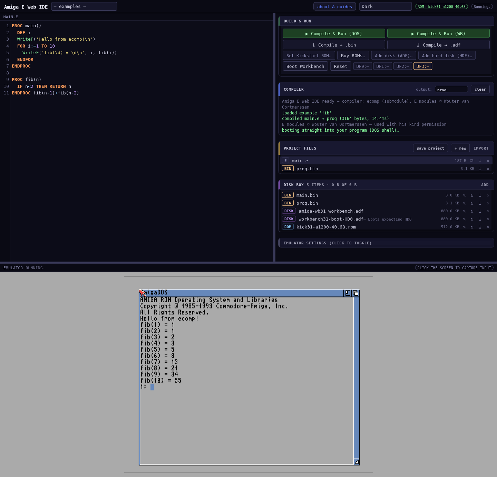
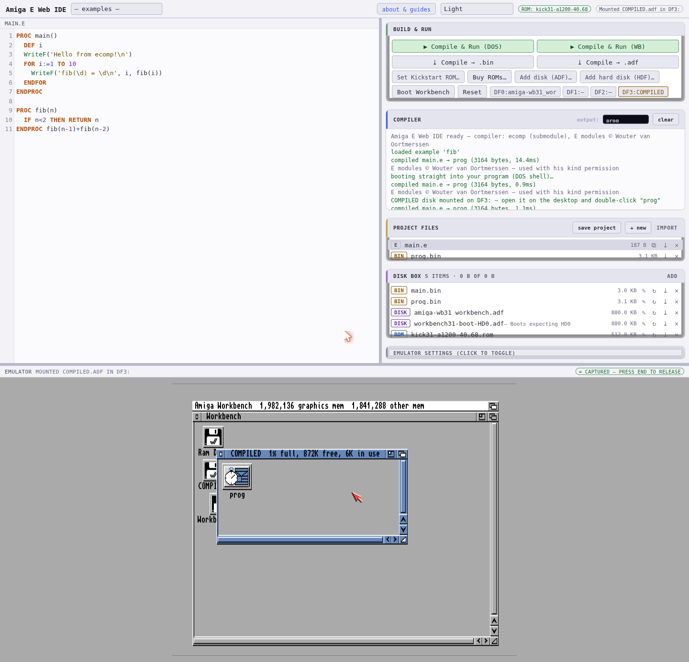
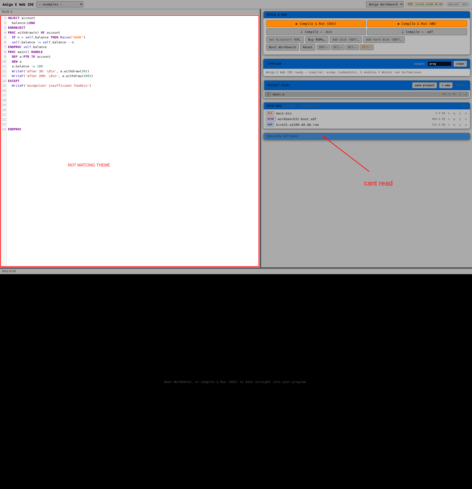

Write Amiga E in your browser, compile it in your browser in milliseconds, and run the result on an emulated Amiga 1200 — Workbench, floppies, hard disks and all. Nothing is uploaded anywhere; the compiler, the emulator and your files all live entirely in the page.
Getting started
- Set Kickstart ROM… — pick your Kickstart 3.1 (A1200) ROM file. It's stored in your browser's disk box, never uploaded. No ROM? Buy one legally from Amiga Forever (Cloanto).
- Add disk (ADF)… — add a Workbench 3.1 boot floppy the same way.
- Pick something from the examples dropdown (the multi-file one loads two tabs).
- Hit ▶ Compile & Run (DOS) — compiles in a few ms, boots the Amiga straight into your program, output in the AmigaDOS shell.

The four build actions
| Button | What happens |
|---|---|
| ▶ Compile & Run (DOS) | Builds a bootable floppy in memory and reboots straight into your program. Fastest way to see console output. |
| ▶ Compile & Run (WB) | Asks how to deliver: floppy DF3 (instant hot-mount into the running Workbench) or HDD image (a real RDB hard disk, attached on reboot). Either way a COMPILED drive appears on the desktop with your program inside — with an icon, double-click to run. |
| ⤓ Compile → .bin | Downloads the AmigaOS executable — take it to real hardware or any emulator. |
| ⤓ Compile → .adf | Downloads a bootable 880K floppy image that runs your program at boot. |
The output name field (Compiler panel) names the produced binary, like
the CLI's -o.

WriteF output isn't visible
there (just like the real machine). Use Run (DOS) for console programs, or
open Workbench's Shell and type DF3:yourprog / COMPILED:yourprog.
Programs that open their own windows and screens work perfectly from the desktop.
Multi-file projects
Exactly like real E: you always compile main.e, and it pulls
modules in via MODULE statements. Add files with + new in
the Project files panel:
MODULE '*helper' -> the * means: another file in this project
PROC main()
greet('Amiga')
ENDPROC-> helper.e
OPT MODULE
EXPORT PROC greet(who)
WriteF('hello, \s!\n', who)
ENDPROCModule resolution order: your project file tabs → the bundled v40 OS modules
('dos/dos', 'intuition/intuition', …). The
exec/dos/intuition/graphics calls are preloaded implicitly — OpenW,
WriteF, MODE_NEWFILE just work.
The disk box
Your persistent, private, in-browser storage (IndexedDB — survives reloads, multi-GB quota, nothing leaves your machine):
- ROM Kickstart images — ↻ selects the active one (shown in the header)
- DISK ADF floppies — mount via the DF0:–DF2: drive chips (DF0 = boot disk); DF3 is reserved for compiled output
- HDF hard disk images — attached as DH0 on next boot
- BIN every compiled binary, automatically
- PROJECT saved projects (see below)
Every item can be renamed and given a description (✎), downloaded (⤓) or deleted (✕). Drop any mix of files on add — they're sorted by extension.
Projects
save project stores everything — all source files, emulator settings
and the output name — as one item in the disk box. ↻ on a project restores
the lot. Download it as a .project file to move between machines
or share; drop it back on the disk box to import.
The emulator

| Setting | Notes |
|---|---|
| Model | A500 – A4000 (default A1200) |
| Fast RAM | 0–8 MB on top of the model's chip RAM |
| hi-res / double scan | the Amiga's native output resolution |
| Screen size | 1× / 1.5× / 2× / fit pane — display scaling, applies live |
| turbo floppy | much faster boots; uncheck for authentic drive timing |
| NTSC / audio | as labelled |
Keyboard & mouse
Click the Amiga screen to capture input. The mouse is locked into the emulator (it cannot wander out of the pane) and the keyboard goes to the Amiga. Press the release key (default End, configurable: End / Home / PageUp / PageDown — none exist on an Amiga keyboard) to hand control back to the IDE. Esc also breaks the lock — that's a browser security rule for pointer capture — just click the screen to recapture. While not captured, typing stays safely in the editor. Drag the pane borders to resize the layout.
Under the hood
- Compiler: ecomp — zero-dependency JavaScript, E v3.3a semantics validated byte-for-byte against the original compiler (115 differential tests, plus CI that runs the produced binaries under m68k emulation). Included here as a git submodule.
- Delivery: compiled programs are wrapped into disk images in memory — a bootable OFS floppy (DOS mode), an FFS data floppy hot-mounted on DF3, or an RDB-partitioned FFS hard disk image (WB modes). No serial cables, no transfers, no prompts.
- Emulator: Scripted Amiga Emulator (SAE).
- Editor: CodeMirror with a custom Amiga E mode (nested
/* */,->comments,$hex/%bin, E's case-significant identifiers).
Files, rights & thanks
- Kickstart ROMs and Workbench disks are not included — use your own or buy them from Amiga Forever. Everything you load stays in your browser.
- The E v40 modules are © Wouter van Oortmerssen (Aminet dev/e/amigae33a), included with his kind permission.
- IDE and compiler are GPL-3.0: Amiga-E-Web-IDE · Amiga-E-Compiler-WebBased.